WPI Badminton Club Tracker
Tools Used

HTML
MongoDB
JavaScript

Node.js

CSS
Easily track progress toward you grade goal in Badminton Club
MOTIVATION
Students at WPI can register for Badminton Club for gym credit, though the grade for the "course" is determined by the amount of playtime hours you attend throughout the semester with the following convention:
- A: 28 Hours
- B: 24 Hours
- C: 21 Hours
- NR (No Record): Under 21 Hours
Being a busy student, I often lost track of how many hours I had left to reach a certain grade milestone. After feeling guilty for contantly asking the club executives how many hours I have left at every play time, I decided to make this tool!
I also had the opportunity to expirience using other tools for this same concept, like Svelte, during CS 4241 (Webware)